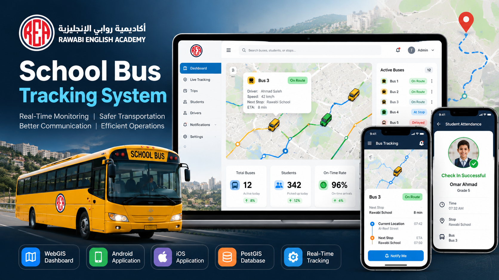
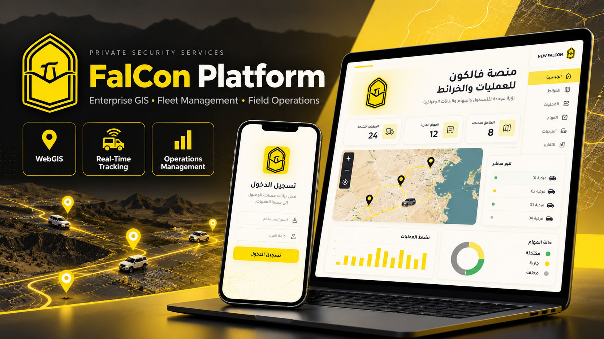
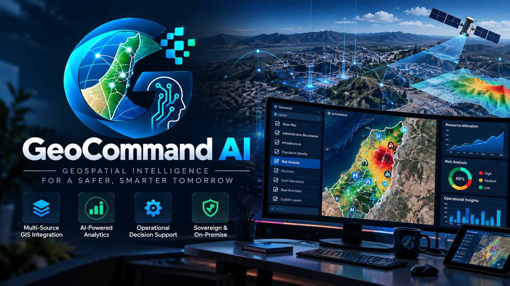

Enterprise GIS Consulting & Automation
ArcGIS workflows, geodatabases, rules, validation, migration, and repeatable automation.
Senior Geospatial Software Engineer | Enterprise GIS
I design WebGIS applications, spatial databases, automation, and real-time operational software from architecture through delivery.
I engineer the systems behind the map: spatial databases, business rules, APIs, automation, live events, and operational applications.
Since 2021, my work has connected geographic data with planning, field coordination, monitoring, analysis, and human decision-making.
SERVICES
Focused support for organizations that need dependable spatial systems, operational maps, automation, or connected web and mobile software.
Explore all servicesArcGIS workflows, geodatabases, rules, validation, migration, and repeatable automation.
Spatial schemas, ETL, indexing, query tuning, validation, and GIS-ready APIs.
Interactive maps, operational dashboards, permissions, search, editing, and integrations.
Backends, administration tools, mobile workflows, integrations, and deployment handover.
CORE PRACTICE
Enterprise GIS architecture, spatial data management, ArcPy and Python workflows, Attribute Rules, validation, dashboards, and decision-support systems.
PostGIS, SQL Server Spatial, ETL, audit histories, graph construction, Dijkstra routing, and nearest-neighbor search.
Node.js, Express, React, OpenLayers, Leaflet, GeoServer, REST APIs, authentication, and event-driven applications.
CLIENT SYSTEMS

An end-to-end school transportation platform connecting live vehicle tracking, trip operations, GIS, mobile users, and administration.
View case studyA bilingual digital-commerce and supermarket operations platform connecting shopping, inventory, payments, fulfillment, reporting, and Android staff workflows, with an iOS foundation in progress.
View case studyAn integrated bilingual learning and training platform connecting courses, assessments, live cohorts, attendance, certificates, payments, and administration.
View case study
A GIS-enabled mission management platform connecting vehicles, routes, operational locations, resources, dashboards, and real-time visibility.
View case studyPublic-safe descriptions focus on engineering capabilities while excluding personnel, deployment, security, and operational details.
Enterprise GIS workflows supporting spatial planning, operational mapping, resource visualization, field-data integration, monitoring, dashboards, and decision support.

An experimental geospatial decision-intelligence platform combining implemented optimization models, demonstration environments, and human-in-the-loop workflows.
Technical concepts extracted from practical GIS problems and rebuilt as focused engineering tools.
Scans APRX projects, extracts CIM V3 renderers and symbols, normalizes metadata, and exports documentation.
Python / ArcPy / CIM V3 / JSONReusable geodatabase business rules for relationships, validation, derived values, and automatic feature updates.
Arcade / Attribute Rules / Enterprise GDBTransforms road geometry into a searchable graph for nearest-node matching and shortest-path route generation.
Python / OSM / Dijkstra / cKDTreePreserves geometry-aware record histories across insert, update, and delete operations for accountable GIS workflows.
SQL Server Spatial / Triggers / Audit HistoryTECHNICAL INSIGHTS
Practical articles on GIS automation, spatial databases, Web GIS, routing, and operational geospatial systems.
REAL-TIME GIS / SYSTEM ARCHITECTURE
Turn noisy GPS observations into trusted current state, secure live updates, geofence events, and measurable operational intelligence.
Read articlePOSTGIS / WEB GIS
Design spatial databases around geometry, SRIDs, indexes, query behavior, APIs, and multi-tenant production needs.
Read technical articleROUTING / SPATIAL ALGORITHMS
Build a complete pipeline from road geometry and graph construction to snapping and route reconstruction.
Read articleARCADE / ENTERPRISE GIS
Structure validation, relationship logic, derived values, and controlled updates inside enterprise geodatabases.
Read articlePUBLIC WEB PROJECTS
Bilingual content, responsive interfaces, structured metadata, custom UI implementation, and production deployment.
The progression is consistent: from spatial analysis and operational mapping into automation, databases, APIs, real-time systems, and full-stack platforms.
Technical lead work at Ramallah Digital Production across solution design, full-stack development, database architecture, system integration, deployment planning, and technical proposals.
Operational maps, GIS applications, command dashboards, GIS administration, spatial analysis, data management, and Python workflows for the Palestinian Police General Administration.
Contributed to preparing, photographing, and uploading Palestinian street data for Apple Maps with the Palestinian Mapping Center.
EDUCATION
Esri Enterprise Workflow, ArcGIS Pro Workflow Essentials, and ArcGIS Pro Basics.
Remote Sensing using ArcGIS Pro and ArcGIS Online Basics.
Basics of JavaScript Web Apps and GIS Basics.
ArcGIS Enterprise, ArcGIS Pro, QGIS, GeoServer, PostGIS, OpenLayers, Leaflet
Python, ArcPy, Arcade, Attribute Rules, CIM V3, SQL, batch geoprocessing
JavaScript, Node.js, Express, React, PostgreSQL, MongoDB, REST APIs, Socket.IO
Graph algorithms, Dijkstra, cKDTree, OSM processing, ETL, data reconciliation
CONTACT
Share the problem, expected result, and timeframe. I will respond with focused next steps and the right delivery approach.